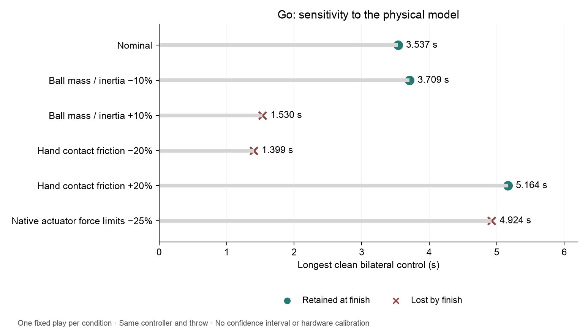
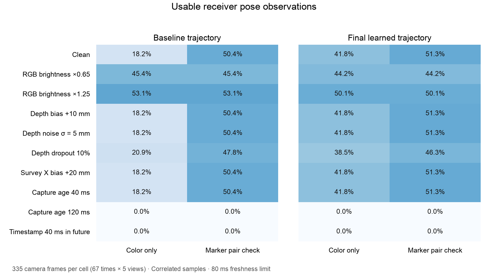

This is the preserved study as of November 15 at 1 a.m. Pacific. Descriptions of the current controller refer to that earlier version. Read the latest results.
In Go trial 02, the robot recovers from a bobble and maintains clean control with both hands for 3.537 seconds through the finish. The current controller retains the ball in 4 of 50 trials (8%) under this simulation model. The receiver is walking, and hardware transfer remains unverified.
Independent instructional reference; not a matched comparison. Watch original
A humanoid receiver must coordinate vision, locomotion and manipulation while both its body and the ball are moving. Football makes this coordination especially demanding: the robot must follow a route, predict where a pass will arrive and absorb the ball’s momentum without losing balance. Diamond Hands studies this problem in simulation with a Unitree G1, compact Aero hands and a fixed passing machine. We use Go, Out and Slant routes to examine how interception and grasp timing interact, with the longer term aim of catching in stride.
We build on pretrained locomotion from legged_rl_lab’s G1 AMP policy and NVIDIA’s whole body controller, then add a visual tracker and scripted catch coordination. The controller observes rendered color and depth images from calibrated external cameras, IMU measurements and joint encoders. It also knows the commands issued to the passing machine. The tracker estimates the incoming trajectory and triggers the grip, while the commanded release schedules hand preloading. Predicted arrival delays the reach in Go and Out; Slant stages its lower hands from the observed route phase. In all three, the receiving posture directs the palms upward.
This separation lets us ask two questions: whether the receiving geometry can produce a retained catch, and whether learning improves coordination under the same physical evaluation. The main demonstrations use scripted catching over pretrained locomotion. Runtime control uses the observations and commands described above; exact simulated states and contacts are reserved for evaluation and offline fixture calibration. An explicitly privileged diagnostic is reported separately. The camera and hand interfaces have not yet been integrated on a physical G1.
Across the original comparison, the current controller retains the ball in 4 of 50 Go trials, 9 of 50 Out trials and none of the 50 Slant trials. These are walking receives. We subsequently train one coordination policy per route for one hour on separate NVIDIA RTX PRO 6000 GPUs, using visual proximity, relative motion and hand posture as learning signals. None passes the final promotion criteria. The experiments below explain this gap between visual reward and physical possession, then examine perception, contact sensitivity and responses to missed catches.
| Experiment | Changed component | Information / learning |
|---|---|---|
| Frozen 450 trial study | Go: thumb timing. Out: pose + grip bundle. Slant: 140 ms grip delay. | Scripted catching over pretrained locomotion; no new catching weights. |
| Exact ball diagnostic | Ball positions, visibility and stated uncertainty | Privileged position observations at camera cadence; tracker still estimates velocity. Not deployable. |
| Post hoc 150 trials | Exact ball covariance only: I × 10⁻⁶ m² | Same 50 throws and current controller per route; separate follow up, no replacement of the original results. |
| New coordination PPO | Go/Slant: bounded arms + native hand commands. Out: reach timing. | Camera estimates, IMU, encoders and known commands for actor, critic and reward. Physical contact scores are evaluation only. |
What the policies optimize
To study learned coordination, we retain the locomotion controller and optimize a limited set of catch adjustments with PPO. Go and Slant adjust 14 arm joints and six native hand command groups from 169 sensor and command features; Out adjusts reach timing from 65 features. The actor, critic and reward use camera estimates, IMU measurements, encoders and known commands. Exact simulated contacts and body states are available only to the independent evaluator. The earlier 600 comparison trials use fixed scripted catch controllers, so their results are reported separately from these learning experiments.
The learning objective first measures how closely the observed ball follows the receiving cup. Let e denote the error estimated from the cameras, in metres, and v the fitted relative velocity, in metres per second. A Gaussian proximity score Φ approaches one as the ball approaches the cup. Its scale s is (0.12, 0.08, 0.10) m for Go and Slant and (0.15, 0.12, 0.15) m for Out. Errors and scales use metres, velocities use m/s and durations use seconds throughout the implementation. These fixed reference units define a dimensionless learning proxy rather than a physical energy or force.
For Go and Slant, each fresh observation contributes discounted potential shaping, proximity weighted by relative speed and positive increments of visual dwell D. Here Δ is the time between new images, in seconds. An uninterrupted dwell of 0.75 s or 2 s receives a milestone bonus of +2 once at each threshold. Dwell estimates how long the ball remains near the receiving cup; it does not measure contact between the ball and the hands.
Out uses a timing objective with fresh proximity reward 0.2ΔcΦ, the same term weighted by relative speed, qualified dwell increments and milestone bonuses. It has no potential bank or terminal bonus. Before the ball is near, costs encourage a compact posture and lower arm angular velocity; within 0.15 s of predicted arrival, a posture cost encourages the receiving configuration. These terms favor a late reach while allowing the movement needed for interception. They do not impose a universal penalty on reaching speed or impact speed.
Exact reward gates, coefficients, action limits and source
| Term | Go / Slant native v3 | Out timing v3 |
|---|---|---|
| Freshness / uncertainty | Image and pose age ≤80 ms; skew ≤40 ms; each relative XYZ σ≤0.06 m. | Capture age ≤80 ms; each XYZ σ≤0.06 m; fresh capture only pays. |
| Continuous dwell | Valid relative velocity ≤0.35 m/s; |e|+2σ≤(0.16,0.12,0.16) m; palm gap 0.10 to 0.28 m; valid normal bisector; upright≥0.9. Gaps≤0.10 s. | Valid relative velocity≤0.8 m/s; |e|∞≤0.12 m; upright≥0.9; qualified image gaps≤80 ms. |
| Dwell form | Both palm up cosines≥0.60 and face height≤shoulder+0.15 m until an acquisition hypothesis forms at 0.20 s. Invalidity resets dwell; a form hypothesis may persist. | Both palm up cosines≥0.60 and height≤shoulder+0.15 m on each qualified sample. |
| Potential / boundaries | First valid capture establishes Φ without entry credit. Invalidity or termination debits−0.15Φ once; invalid new capture also costs 0.02. A +2 terminal bonus requires valid observation, dwell≥0.75 s, upright≥0.9 and acquired form. | No potential bank or terminal bonus. Δc≤0.04 s; velocity term needs 0<Δ≤0.10 s. |
| Arm / native actions | Arms±0.18 rad, correction rate 1.5 rad/s; six native groups±0.15 normalized stroke, rate 1 fraction/s. Native tendon metres and opposition radians normalized separately. PPO 25 Hz; target updates 50 Hz. | One a∈[−1,1] at 50 Hz. Desired phase rate=min(rate_max,(1+0.35a)/Treach), acceleration limited before quintic target blending. Fixed driver joint motion limits remain. |
| Motion cost per second | 2(0.9−upright)₊ +0.05 mean(a²)+0.02 mean(δ̇²), plus causal form cost. | 2(0.9−upright)₊; when early:0.12 mean(compact error²)+0.025 mean(arm velocity²); near arrival:2 mean(receive error²). |
Native form cost penalizes receive palm orientation by 2 mean[((0.60−up)₊/1.60)²]. Confident intercept height sets allowed hand height max(0.12 m, predicted height+2σ+0.06 m); squared excess uses 0.15 m scaling and clips at 2 before squaring. The approach only early hand term has weight 0.5 relative to shoulder−0.05 m, abstaining without a fresh confident arrival, for high throws, and within 0.65 s conservative TTC. Holding permits reorientation. All costs are multiplied by elapsed seconds.
Native positive dwell credits are capped at 3 s per uninterrupted fragment; invalidity does not reclaim previously paid fragments. The early Go counterexample below shows why proximity and fragmented visual dwell cannot certify retained possession. The 0.1135 m native cup radius is a fixed proxy, not a measured football orientation.
Exact source and SHA256: manifest · Native observations, actions and reward · Out observations, action and reward · Out capture aligned driver · form gates. Zero action/Gym ledger preflights and independent physical checks are required; source only boundary checks do not establish hardware transfer.
We first evaluate the scripted controller to establish what the fixture can achieve before interpreting learning. The Go and Out videos show the first successful trial by index in each batch of 50, with the nominal trials available through the video control. The Slant video shows its nominal outcome: the lower hands make 22 milliseconds of bilateral contact before the ball drops. The following comparisons include every trial and measure retained possession separately from route completion and running.
Each route is evaluated with three fixed controllers on the same 50 seeded throws. Lateral and vertical aim vary by up to 2 cm, and requested release time varies by up to 20 ms. The machine, receiver start, cameras and catch plane remain fixed, with release executed on the existing control clock. Pairing the throws helps isolate controller differences, while the narrow perturbation range limits the conclusion to sensitivity around this tuned fixture.
The comparisons change thumb timing in Go, receiving pose and grip schedule together in Out, and grip delay by 140 ms in Slant. A third diagnostic supplies exact ball positions at the original camera cadence, including during occlusion, while the tracker continues to estimate velocity. This privileged diagnostic also changes visibility and stated uncertainty. It therefore tests compatibility with the tracker as well as position information, and cannot serve as a deployable controller or a theoretical upper bound.
A successful receive must sustain possession beyond the first touch. We require at least 0.75 seconds of continuous bilateral hand contact, retention through the end of the full play, and the declared hand height and palm orientation criteria. Support from the body, floor or hand mounts is excluded, and excessive geometric overlap or loss of balance causes failure. This physical criterion distinguishes a retained catch from brief fingertip contact or apparent possession caused by overlap. Route accuracy and running are evaluated separately.
| Route | Current | Earlier / delayed grip | Exact ball diagnostic |
|---|---|---|---|
| Go | 4/50 (3.2 to 18.8%) | 3/50 (2.1 to 16.2%) | 0/50 (0.0 to 7.1%) |
| Out | 9/50 (9.8 to 30.8%) | 0/50 (0.0 to 7.1%) | 0/50 (0.0 to 7.1%) |
| Slant | 0/50 (0.0 to 7.1%) | 0/50 (0.0 to 7.1%) | 0/50 (0.0 to 7.1%) |
All 450 trials completed and were independently rescored from their traces. Error bars show 95% Wilson intervals for this small perturbation test distribution. A result of 0/50 has an upper interval bound of 7.1%; it does not prove zero underlying probability. Hold duration curves include every trial and use route specific horizontal scales.


Exploratory paired contrasts
Post hoc exact conditional McNemar tests compare current with each route’s distinct reference on the same 50 throws. Holm adjustment covers these three contrasts. These are not 50 training seeds or a preregistered significance analysis; Out changes pose and grip together.
| Route | Current only / reference only | Difference | Holm adjusted p |
|---|---|---|---|
| Go | 2 / 1 | +2 pp | 1.0000 |
| Out | 9 / 0 | +18 pp | 0.0117 |
| Slant | 0 / 0 | +0 pp | 1.0000 |
Out’s observed bundle difference is supported within this local sampler; it does not identify a single mechanism or establish hardware reliability. Go’s extra retained catch is inconclusive. Exact statistics and scope
Original 450 trial scores (CSV) · Statistics and paired differences · Frozen protocol
The exact ball test exposed an estimator compatibility problem. The tracker assumes gravity of 9.80665 m/s² while the simulator uses 9.81 m/s²; with near zero observation uncertainty, the Go tracker rejects the flight fits. Replaying the same recorded positions with a 1 mm uncertainty floor restores valid predictions. A separate, explicitly post hoc set of 150 trials changes only that uncertainty: retained catches become 2/50 for Go, 4/50 for Out and 0/50 for Slant. The original results remain intact. More accurate positions alone do not guarantee a better controller, and this floor is not a calibrated camera noise model.
Uncertainty follow up: paired results and reproduction
Each follow up uses the original 50 throws and current controller for its route. The original exact ball test and the uncertainty floor test both bypass visibility loss; neither is a deployable sensor policy. The only new change is the covariance supplied to the tracker. Curves include every trial; intervals are 95% Wilson intervals.


All 600 trial scores · Follow up statistics · Follow up protocol
| Route | Training transitions | Physical passes / fixed cases | Nominal clean hold | Nominal sensor return |
|---|---|---|---|---|
| Go | 106,092 | 1/3 → 0/3 | 3.537 → 0.131 s | 1.153 → 7.803 |
| Out | 52,020 | 0/7 → 0/7 | 0.001 → 0.005 s | −0.00249 → 0.00274 |
| Slant | 103,012 | 0/3 → 0/3 | 0.012 → 0.041 s | −0.420 → −0.325 |
The final learning evaluation reveals a mismatch between the optimized signal and the desired behavior. On the nominal Go play, sensor reward increases from 1.153 to 7.803 while clean control decreases from 3.537 s to 0.131 s and the ball is lost. Go and Slant are evaluated at nominal aim and lateral offsets of ±2 cm. Out uses nominal aim, four fixed throw cases and two capture age conditions. All 26 physical scores are independently recomputed from the full traces. These paired diagnostic cases are not sampled success rates or independent training replications, and the Out training baseline is a separate experimental controller from the retained Out demonstration.
All 26 final evaluation scores · Evaluation protocol · Independent audit and source hashes
Earlier checkpoint and interpretation of physical passes
The earlier Go checkpoint at 9,472 transitions also increased visual return (1.153 → 2.099) while reducing clean control (3.537 → 0.992 s), then dropped the ball. Neither rollout earned a retention milestone; fragmented dwell and proximity could increase return without sustained possession. Reward decomposition · Physical rescore.
The table applies the declared contact, endpoint, form, overlap and balance criteria within each experimental model. The separate original reference identity check remains false; an experimental physical pass does not certify the original model, realistic hardware impact or running. No criterion was relaxed to qualify a checkpoint.
Exact physical success criterion and model assumptions
The unchanged anatomical v1 evaluator uses full 1 kHz contact traces: bilateral normal contact≥0.10 N for≥0.75 s before any excluded support; final bilateral coverage≥90% of the last 0.25 s with no gap>25 ms; mean vertical hand support≥0.80 ball weight. No excluded hand/back/mount, torso, floor, other support or applied ball load is permitted. Ball penetration≤10 mm; interhand penetration≤5 mm; upright cosine≥0.9; full horizon and zero warnings.
Acquisition form is checked from 20 ms before through 200 ms after first contact: both historical palm body normals up≥0.60 and face height≤shoulder+0.15 m in≥80% of covered samples. The physical pad facet tilts about 15° from that body convention; the published convention stays fixed. Free joint/no attachment, initial free flight and stationary prerelease poses are independently checked. Horizons: Go 11 s, Out 10 s, Slant 9.5 s. Exact criteria source.
Physics integrates at 1 ms. The full episode native actuator envelope is an optimistic symmetric ±65.5556 N tendon force and±0.59 N·m opposition torque, not a continuous load, speed and torque or pull only tendon model. CCD tolerance 10⁻⁸ and 35 iterations remain fixed. Changed model reference identity is reported separately; possession does not certify route accuracy, recurrent running or hardware reliability.
The comparison uses full episode actuator force limits derived from an optimistic motor stall bound and a tighter collision solver tolerance. Go and Out retain an experimental 2.5 ms contact time constant; Slant retains the original 20 ms model. Results are compared within each route, not pooled across different contact models. These assumptions are not calibrated to physical Aero hands, and actuator force limits do not bound collision impact. A qualifying Go trial still peaks at about 722 N on the left palm. The videos above use these same comparison settings. Camera and hand integration on a real G1, reliable in stride catching and hardware transfer remain unverified.
Research context and reproducibility
Catch It All! / paper studies a seated G1 with a different hand, privileged teacher training and student distillation. Its ground truth fingertip to surface reward is not used here, and its real world rates are not directly comparable. Reviewed source revision.
Agarwal et al., 2021 motivates uncertainty aware evaluation; this study reports fixed controller throw sensitivity, not multi seed RL benchmark performance. Pineau et al., 2021 and the NeurIPS checklist inform our explicit protocol/source/uncertainty disclosures. PPO uses Stable Baselines3. No algorithmic novelty, calibrated impact safety or sim to real success is claimed.
Source, profiles and scored reports · Fresh machine setup limitations · Reward/criteria source hashes. All failures remain in the 600 trial CSV. The selected successful clips illustrate outcomes, not unbiased samples.
Robustness and failure analysis
The failed promotion raises three possible explanations: incomplete visual observations, a reward that does not distinguish valid possession, and dependence on the physical model. We examine these with controlled experiments that fix the inputs, comparison and acceptance criteria before execution. Each nominal replay must reproduce its archived state and control arrays before a changed condition is interpreted. We retain negative outcomes and keep 50 fresh confirmation throws unused during development, following the reproducibility concerns discussed by Pineau et al. and Henderson et al. Multiple independent training seeds remain necessary to assess learning improvements.
We begin with the physical model because a successful grasp may depend on its contact assumptions. Holding the selected Go controller and throw fixed, we vary ball mass and inertia, hand contact friction or native actuator force limits one at a time. A ball with 10% greater mass or friction reduced by 20% causes possession to fail. Reducing native force limits by 25% also causes a late loss, despite an earlier long hold. The six cases identify sensitivity to specific model parameters; they do not estimate success rates or calibrated hardware variability.

Both palm form and balance checks pass in all six cases; maximum ball penetration is 4.74 to 4.97 mm, with no interhand penetration. The first 20 ms peak of summed hand and ball normal forces remains 972 to 1,079 N. Limiting motor force therefore does not establish low collision impact. Dynamics randomization motivates a future robustness experiment, but these measurements are sensitivity tests, not randomized training or evidence of transfer.
All six measurements · Frozen protocol · Independent rescore · Exact model changes
We next examine missing visual observations. Highlights on the football can resemble the yellow robot marker, causing the original color detector to reject a visible receiver. To resolve this ambiguity, an additional association check pairs blue and yellow candidates only when their separation matches the known marker rig; ambiguous pairs still produce no pose. We compare the two observers on identical color and depth packets from the baseline and final learned Go trajectories, using five fixed camera views, three visibility conditions and ten perturbations.

On clean inputs, usable pose observations increase from 61 to 169 out of 335 camera frames for the zero residual trajectory, and from 140 to 172 for the learned trajectory. Clean localization RMSE is about 8 to 9 mm on returned poses; methods return different subsets, so this does not establish an accuracy improvement. A 20 mm survey bias raises RMSE to about 18 mm. Adding an association rule does not remove calibration error.
| Control | Observed outcome | What it tests |
|---|---|---|
| True yellow marker visually removed | 0/6,700 false poses per observer | Rejection when the marker pair is absent |
| Football visually removed | 0/6,700 false ball detections | Shared ball detector; counted once per packet |
| Capture age 120 ms / timestamp 40 ms ahead | 0/4,020 usable poses per observer | 80 ms freshness gate and future timestamp rejection |
The benchmark contains 20,100 distinct input packets evaluated by both observers; all 40,200 rows and 600 per view summaries were independently checked. Visual removal changes rendering only. Exact simulated poses supply offline labels and never enter localization. These are synthetic sensor stress levels, not measurements from physical cameras. The observer improvement changes no recorded catch outcome.
All paired observation rows · Coverage and error by condition · Protocol · Independent audit · Benchmark source
Improved visibility allows a further test of the learning objective. We replay both fixed Go trajectories through the revised observer without advancing physics or changing recorded actions. The original replays reproduce their saved sensor packets and returns exactly. With the revised observer, all 158 captures used by the policy are available in each play, yet the failed learned play still earns more reward than the retained baseline: 10.511 versus 8.998. An independent contact analysis shows that visual dwell can reward contact with excluded hand structures. Thus, increasing observation coverage alone does not make the reward specific to valid possession. Contact labels are used only for this audit. Paired reward decomposition · Frozen replay protocol · Independent replay audit.
Finally, we test whether a local motor model can explain command timing. An Out experiment with ball contacts disabled applies two identical shoulder commands of 0.03 rad. The visual ball remains present to provide an arrival forecast. A model fitted to the first predicts the second with 0.560 mrad joint error, compared with 12.770 mrad for persistence. Conditional palm position errors nevertheless peak at 1.218 and 1.602 mm, exceeding the declared 1 mm limit. We retain this model as a diagnostic. Its validation uses a held out time segment of one simulation, and the conditional palm evaluation uses the recorded baseline body configuration; neither establishes accuracy during loaded contact. Measurements · Independent prediction audit.
Missed catches are part of the same coordination problem: an unsuccessful reach can disturb balance and lead to a fall. We therefore evaluate responses to failed interceptions in the receiving scene. Robot Crash Course: Learning Soft and Stylized Falling motivates examining both impact and the final body configuration. Our experiments use scripted balance aborts and shallow bracing; they do not reproduce the paper’s learned falling policy.
For one matched failure, shallow bracing reduces peak simulated head contact force from 1,183 N to 77 N and the largest 150 ms impulse from contacts outside the feet from 140.70 N·s to 124.89 N·s. The intervention acts before contact, forfeits the catch and leaves the robot on the ground. Earlier action can preserve balance, whereas later action can increase impact. These results show why timing and whole body consequences must be evaluated together. They remain specific to one simulation model, and neither safe physical impact nor recovery to standing has been established.
Rejected stylized fall: reducing head impact can increase total impact
A later hand authored tuck, side roll and seated pose sequence was triggered after a visually confirmed missed catch in a matched historical scene. Head force decreased, but total non foot peak force more than doubled and the robot did not settle into the requested pose. The command transition also exceeded its acceleration bound. We rejected the candidate.
| Measure | Baseline | Stylized candidate |
|---|---|---|
| Peak head contact force | 1,183 N | 490 N |
| Peak summed non foot contact force | 2,755 N | 6,380 N |
| Largest 150 ms non foot normal impulse | 140.70 N·s | 125.44 N·s |
| Stable seated finish / standing recovery | No / no | No / no |
This historical fixture lacks native hand actuator force limits and uses a 3.45 m passing machine split. It is not the current formation or a hardware safety validation. A future controller needs an earlier, physically attainable transition; a joint pose target alone cannot guarantee the desired landing. Full impact and transition audit · Protocol, failures and archived full plays.
Diamond Hands establishes a reproducible setting for studying the interaction between route following, visual interception and grasp timing. The current controller produces occasional retained catches while walking, but the experiments also expose why a convincing demonstration is insufficient evidence of reliable catching. Possession changes with contact assumptions, improved visual coverage does not resolve an ambiguous reward, and a reduction in head impact can accompany a worse overall fall. These findings motivate a possession estimate that can be validated from accessible sensors, followed by independent training runs and evaluation on reserved throws and varied physical models. Reliable catching in stride and transfer to a physical G1 remain the next objectives.
Historical development replays under earlier criteria
Catch experiments and traces · Residual learning study · All fall response comparisons
Simulation only. Three selected walking receives: Go 3.820 s, Out 2.926 s and Slant 2.795 s of clean two hand control. These are demonstrations, not a success rate estimate.
The clips pass the original possession check. Newer audits expose excessive contact overlap and high hands. Robust, realistic catching and hardware transfer remain unproven.
Details
Dashed: target · Solid: measured · Dot: first touch · Blue: passing machine · Arrow: body facing
- Speed before touch
- Not recorded
- Airborne pass travel
- Not recorded
- Clean two hand control
- Not recorded
- Ball at finish
- Not recorded
Robot trial data · Route definitions
Robot and ball poses are recorded MuJoCo physics. The field and passing machine are spectator visuals. Route, gait and possession are evaluated separately. Pretrained locomotion and calibrated color and depth grip; no hardware result.
These development replays pass the original possession check. Realistic impact and hand form remain unresolved: newer audits found excessive hand and ball overlap and high hands.
Lower hand catch study. baseline / learned
Human videos are independent instructional references, not synchronized or matched benchmarks.